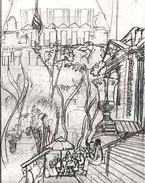

Artist Project - City Trees
Donald Miller

Please send e-mail to: June Julian jj68@nyu.edu
All contents copyright © 1996 - 2003 June Julian All rights reserved
My Great Trees! NYCis supported by a grant from the Puffin Foundation